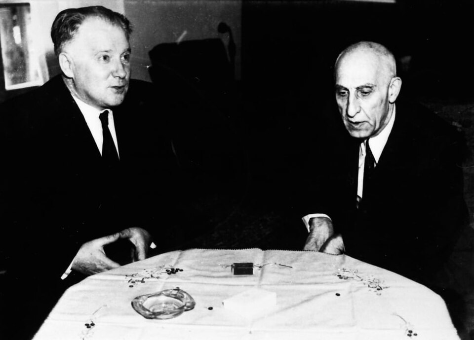

A42-POL-023 // HISTORICAL CLAIM REVIEW
Iran's 1953 Coup Against Mohammad Mosaddegh
Assessment: A foreign-backed coup that ended Mosaddegh's elected government is established.


The precise allegation
Iranian prime minister Mohammad Mosaddegh was removed in a coup in August 1953, organized by Iranian royalist and military actors with covert assistance from the US CIA and British intelligence. Declassified records confirm foreign orchestration and financing. The disputed questions concern relative agency, the coup's popular support, and how much the Shah's return can be attributed to outside action alone.
Chronology and political context
Mosaddegh nationalized the Anglo-Iranian Oil Company in 1951, setting off a British dispute and a domestic constitutional crisis. An initial coup attempt on August 15–16 failed; a second effort on August 19 succeeded after street mobilization and military defections. The Shah returned from exile, Mosaddegh was arrested, and a new government restored oil negotiations under a consortium arrangement.
Primary historical record
CIA operational histories released decades later describe TPAJAX planning, payments, propaganda, and contacts with Iranian actors; British records remain more restricted. Iranian parliamentary and court records reveal domestic political conflict. The US documents are unusually candid about covert action but are internal agency accounts, selectively declassified and shaped by institutional concerns.
Corroboration and contrary evidence
The CIA's role is supported by its own records, declassified State Department files, and later official acknowledgments. Historians differ over whether the second coup would have succeeded without Iranian street action and military defections. The evidence rejects both extremes: a wholly spontaneous popular uprising and a purely foreign operation with no local participants.
What remains uncertain
The scale and coordination of popular demonstrations, the exact chain of command among Iranian officers, and the Shah's prior knowledge remain disputed. British archival gaps complicate reconstruction. The coup's longer-term consequences are clear, but arguments about whether it was inevitable or directly caused the 1979 revolution are counterfactual and contested.
Calibrated verdict
A foreign-backed coup that ended Mosaddegh's elected government is established. Iranian actors were essential participants, while US and British covert involvement materially shaped the operation. The best-supported account treats the event as a joint intervention with unequal resources, not an exclusively American coup or an unassisted royalist restoration.
What evidence could change this assessment
Full British operation files, complete Iranian military communications, and independently preserved records of payments and mobilization would refine the balance of responsibility. New evidence about the failed first attempt could clarify the second's dependence on local networks. Evidence would change the interpretation of degree, not erase the documented CIA operation.
Sources and source limits
- CIA — The Battle for Iran, 1953 (declassified internal history)Agency history openly details CIA involvement; internal retrospective and partial declassification require comparison with Iranian and British records.
- U.S. Department of State — Foreign Relations of the United States, Iran 1951–1954Declassified diplomatic record documents US policy; records omit some covert detail and represent a US governmental archive.
- National Security Archive — The 1953 Iran CoupCollects declassified documents and historical analysis; editorial selection should be read alongside original CIA files.